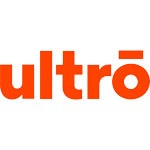

Expérience
Chef de projet junior
Ultrō, Aix-en-Provence – 2017
Stage (4 mois). Gestion d’un projet SEO. Design graphique. Intégration web et gestion de contenu sur PrestaShop et WordPress. Clients : Horse Pilot, Picture, Limagrain.
Assistant chef de projet
Agence 1989, Aix-en-Provence – 2016
Stage (4 mois). Design graphique. Conception de sites web sur Sketch. Prototypage sur Axure RP. Gestion de contenu sur WordPress. Clients : Michelin, Volkswagen, U2P.

Chargé d’accueil
Office de tourisme, Fuveau – 2015
Stage (1 mois). Accueil des visiteurs. Communication web. Création d’un circuit thématique.

Guide culturel
Musée de la mine, Gréasque – 2014
Stage (2 mois). Visites guidées. Traduction de documents. Réalisation d’affiches.